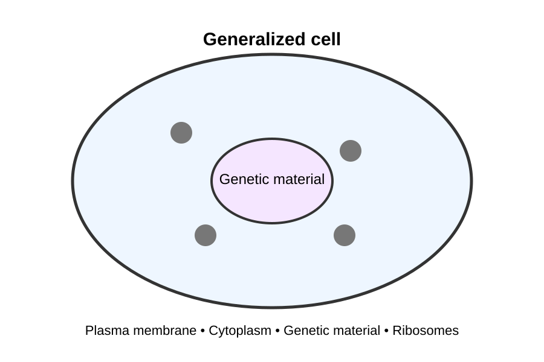

2 Cell Biology
2.1 Introduction
Cells are the fundamental units of living organisms.
Although cells vary enormously in structure and function, all cells share several fundamental characteristics.
2.2 Learning objectives
By the end of this chapter, you should be able to:
- explain the main principles of cell theory
- distinguish between prokaryotic and eukaryotic cells
- identify major cellular structures
- relate cellular structure to cellular function
- explain why cells must remain relatively small
2.3 1.1 Cell theory
Cell theory provides a fundamental framework for understanding biology.
The modern version of cell theory includes several key ideas:
- All living organisms are composed of one or more cells.
- The cell is the basic structural and functional unit of life.
- Cells arise from pre-existing cells.
These principles provide a foundation for understanding the organization of living systems.
When studying cell biology, don’t memorize structures in isolation.
Always ask:
How does the structure of a cell or organelle help it perform its function?
2.4 1.2 Cell organization
Cells contain structures that work together to maintain the organization and processes necessary for life.

Figure 2.1 shows a simplified representation of cellular organization. The structures within a cell work together as an integrated system.
2.5 Prokaryotic and eukaryotic cells
Cells can be broadly classified as prokaryotic or eukaryotic.
2.5.1 Prokaryotic cells
Prokaryotic cells do not have a membrane-bound nucleus.
Bacteria are examples of organisms whose cells are prokaryotic.
2.5.2 Eukaryotic cells
Eukaryotic cells contain a nucleus surrounded by a membrane.
Animals, plants, fungi, and protists contain eukaryotic cells.
2.6 Check your understanding
2.6.1 Question 1
Which structure contains most of the genetic material in a typical eukaryotic cell?
- Ribosome
- Nucleus
- Cell wall
- Mitochondrion
Nucleus
In a typical eukaryotic cell, most of the cell’s DNA is contained within the nucleus. The nucleus is surrounded by a nuclear envelope that separates its contents from the cytoplasm.
Mitochondria also contain a small amount of DNA, which is why the phrase “most of the genetic material” is important.
2.6.2 Question 2 — Explain your reasoning
A student says:
“Mitochondria can’t contain DNA because DNA is only found in the nucleus.”
Is the student’s statement correct?
No.
Mitochondria contain their own small amount of DNA. However, the vast majority of a eukaryotic cell’s DNA is located in the nucleus.
This is an example of why biological statements need to be interpreted carefully. Saying that DNA is “in the nucleus” is useful as a generalization, but it is not literally true for every DNA molecule in a eukaryotic cell.
Why might it be useful for a cell to keep most of its DNA inside a membrane-bound nucleus?
Think about what the nucleus separates from the rest of the cell.